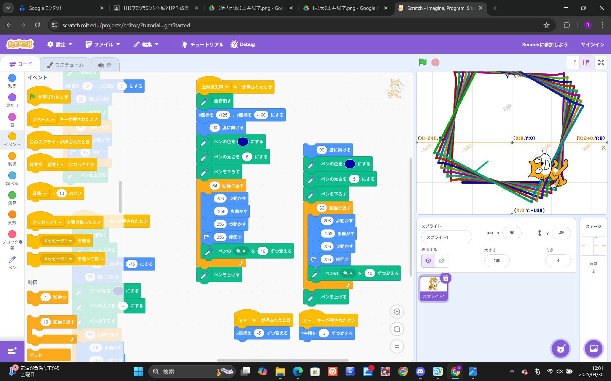
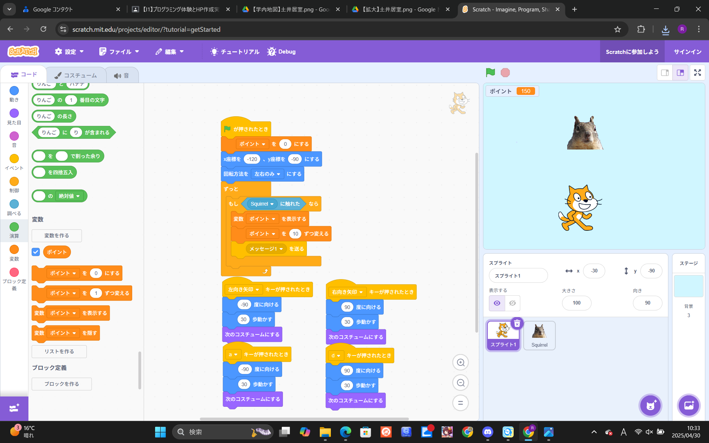

1週目のレポート ： 公大高専１年実習I-1
４a班11番
第1週目
1-1 サイエンスアート

1.内容
今回の授業では、スクラッチに新しいムーブメントを追加し、スクラッチ内にペンツールを追加する方法を学ぶことが出来た。
他には、ペンが線を描くごとに色を変える方法など、自分が今まで全く知らなかったことを学ぶことが出来た。
2.感想
この授業を受けて、マイコンを追加することが出来ることは知っていたが、スクラッチにペンツールを追加することが出来るということを初めて知った。
自分はプログラミングが苦手であるため、この授業についていくことができるか不安に感じている。
1-2 ゲーム

1.内容
スクラッチにおけるスプライトを変数によって出現させる場所をランダムにする方法や、複数のスプライトが接触したときに得点を加算し、表示する方法、背景の変更、
スプライトの追加方法などを学んだ。
2.感想
今までスクラッチ上でまともに遊べるゲームを作ったことがなかったため、今回の体験は自分にとって新鮮な体験となった。
自分にとってスクラッチは初めて触ったプログラミングソフトであったため、
1-3 ホームページ作成
私のホームページ
1.内容
学習した内容を説明する文章を
自分で考えて作成する（50文字以上．100文字程度を推奨．※生成AIを使ってはいけない）
2.感想
学習した内容を実践したときに自分が感じた感想を
自分で考えた文章で作成する（50文字以上．100文字程度を推奨．※生成AIを使ってはいけない）
各ページへのリンク
1週目のレポート
2週目のレポート
3週目のレポート
私のホームページ